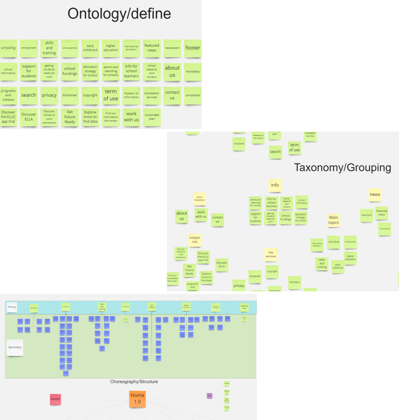
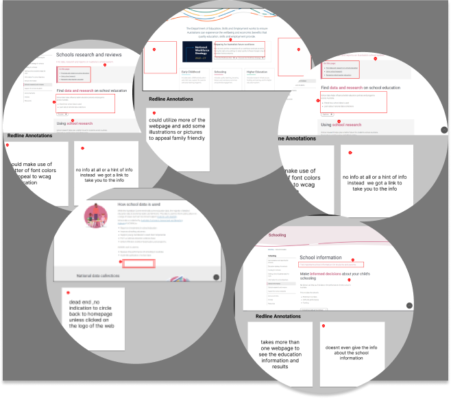
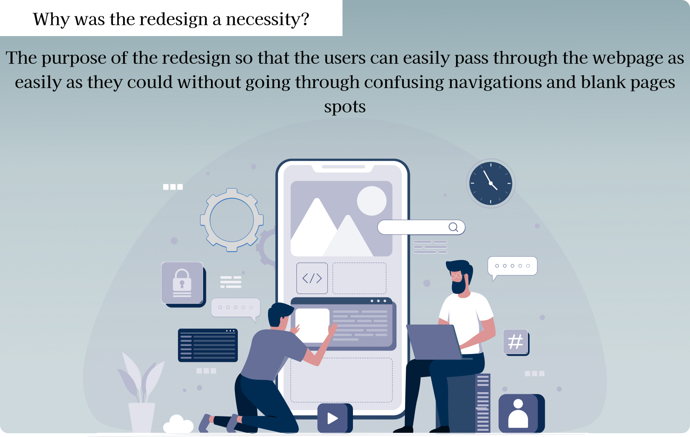
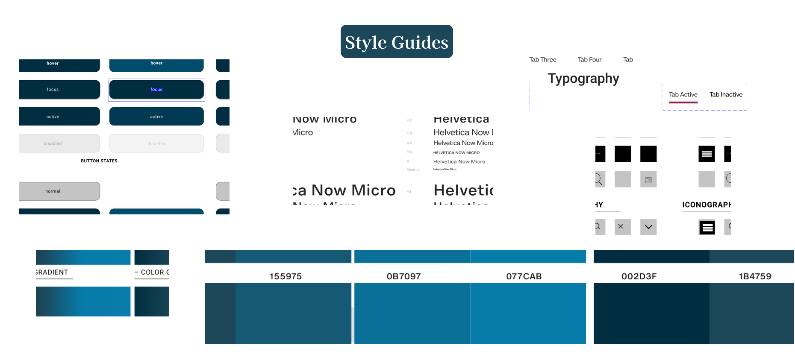
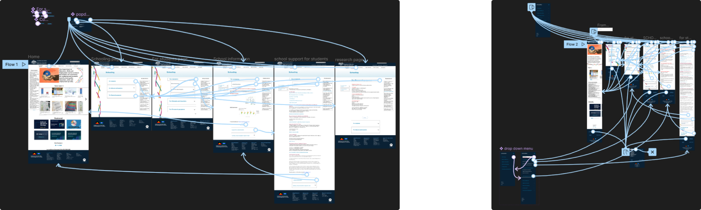

Design Process

During my redesign i have made a series of changes of the outlook of the webpage ,for i had only 1 month to do the project alone , i have managed to complete the project using the step
DEFINE - IA -RESPONSIVE DESIGN - DESIGN AND PROTOTYPE
1.Define
I needed to identify the webpages paths and where it takes me if i wanted move around ,what i have seen is each section was clustered into one, without categorising it and seperating the information to indicate that this specific information is related to a section


Problem Statment
I needed to identify the webpages paths and where it takes me if i wanted move around ,what i have seen is each section was clustered into one, without categorising it and seperating the information to indicate that this specific information is related to a section.
User Path
Steps in using : https://www.dese.gov.au/
1.Launch Dese.com
2.navigates to schooling category location on the main page
3.wants more info in australian schools so user clicks on Schools research and reviews
4.finds the information on Schools research and reviews
5.Then user navigates to explore more and prompted with government info
6. user goes back to schooling category
7.click on school information
8. clicks on Find school data at My School to look for schools around the users area
9.was taken to a different website

Why would i change the sites navigation system:
To make the users path easier to navigate, i needed to move to Information Architecture, so i can help and improve the user path that Allen will be taking to , and can easily go through the webpage as it is supposed to be ,catogerised , simpilified and Appealing to interact and use.
2.Information Architecture
Based on user testing, my users and I found that the navigation system needs a retouch and refinement, which will eliminate unnecessary spaces and confusion between the pages so that my users can use the shortcuts that is cleanly displayed on and not navigate to the header everytime they move to another information webpagemake the navigation bars more appealing and visible to be used upon all the pages
to find more of my Redline annotations :
https://drive.google.com/file/d/17eXe6Y3DI4qn_bpDgaCQoimsdU27xafw/view?usp=sharing
2.Information Architecture
The new sitemap is redesigned as if the secondary webpages are all one page itself where all the information is categorised but seperate from each other.
to find more of my Sitemap:
https://drive.google.com/file/d/17eXe6Y3DI4qn_bpDgaCQoimsdU27xafw/view?usp=sharing

3.Responsive Design
For the Desktop , i have made a series of changes from the drop down menu on the navigation bar and the side bar within the webpages to simplify and indicate the areas that was needed to be interacted with .

3.Responsive Design
On the mobile resopnsive design, the burger menu dropdowns needed a rework and redesign because of how it was making my users and i confused on the layout, also the footer needed alot of work because scrolling endlessly on the footer wasnt making my users enjoy using the mobile version.


4.Design
Lo-Fidelity Wireframing


To keep up with clients Guidelines i needed to rework into the Governments regulation of the wcaa certfications where some parts of the original sites didnt follow, so i took matters into careful consideration and followed the regulations, so i made the style guide abit similar but not too much to clarify the infromation and meet up with the regulations
4.Design
Final Design and iterations

5.Prototype
Final Design and iterations
Desktop
Mobile